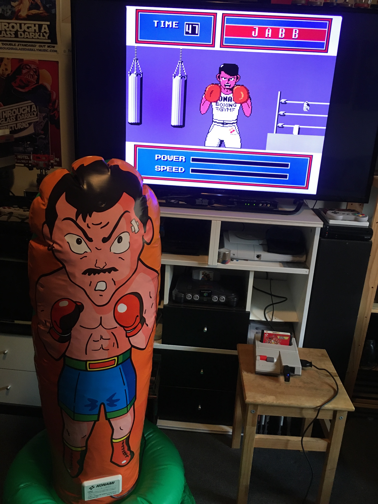
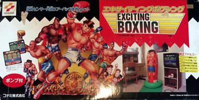

Exciting Boxing Controller
An inflatable humanoid punching bag you physically fought to control a Famicom boxing game

Overview
The Exciting Boxing Controller was an inflatable humanoid punching bag peripheral for the Nintendo Famicom, released by Konami in December 1987. Bundled with the game cartridge Exciting Boxing (RC250), this was a dedicated single-game controller: a life-sized vinyl boxer you inflated with an included foot pump, weighted with two liters of water in the base, and then physically punched to control the on-screen fighter.
Inside the bag were 11 pressure sensors—five on the left side, five on the right, and one at the top—that registered punch location. The controller connected to the Famicom via its 15-pin expansion port through a control box at the base. A green plastic mat extended from the base for the player to stand or kneel on, anchoring the unit against the force of punches. The included knitted gloves completed the ensemble.
The game itself was structured as a boxing RPG: players trained to build stats, then fought through seven opponents across weight classes, using a password system to save progress. Konami's marketing called it a "sweat-body Famicom" (汗体ファミコン), explicitly positioning gaming as a physical, embodied activity. The peripheral was Japan-only, priced at ¥7,980, and sold in an enormous 60cm-wide box that was impractical for both retail shelving and Japanese home storage. It was a commercial failure and is extremely rare today—complete-in-box examples are believed to number in single digits.
Deep dive
Using the Exciting Boxing Controller meant transforming your living room into a boxing gym. You first had to inflate the bag with the foot pump, pour two liters of water into the base to prevent it from flying across the room, don the knitted gloves, and stand on the mat. Then you punched. The 11 internal pressure sensors detected punch location—left jab triggered a left jab on screen, right hook triggered a right hook—but there was no movement control. The bag only read punches; you couldn't make your fighter dodge or move. In practice, the sensors were notoriously unreliable: a 2019 hands-on review reported hits registering only "sometimes." The bag itself fell over frequently, especially from hard hooks, interrupting gameplay while you set it upright again. The setup process alone—inflation, water, mat positioning—was so involved that a full play session required substantial commitment before the first punch was thrown.
The game was developed by Human Entertainment (株式会社ヒューマン), a Japanese studio founded in 1983 that would later become famous for the Fire Pro Wrestling series. Human's wrestling and boxing expertise made them a natural fit for this project. Konami published it as part of their "Exciting" sports series, which included Exciting Soccer and Exciting Basket. Intriguingly, Konami also produced Top Rider (1988), an inflatable motorcycle peripheral for the Famicom, suggesting a brief corporate flirtation with inflatable game controllers during Japan's bubble economy—a period when consumer electronics companies could afford to take wild risks on strange hardware. Exciting Boxing was developed exclusively for the Famicom, not as an arcade port, which was unusual for Konami at the time.
The controller communicated state as two nibbles (4 bits each) read through the Famicom's standard controller port protocol. The cartridge PCB used Konami's VRC-1 mapper chip (iNES Mapper 75) with 128KB of PRG ROM and 128KB of CHR ROM. First production run date codes indicate November 1987 manufacturing. The MAME emulator team added preliminary support in 2021 (PR #8817), though the device is flagged as having 'imperfect' emulation due to incomplete understanding of the sensor logic. The sensors appear to be binary contact/pressure switches rather than analog force sensors—they detected WHERE you hit, not HOW hard. The game handled opponent dodging and evading contextually, animated based on missed punches or timing rather than player input.
The Exciting Boxing Controller failed for reasons that read like a checklist of early HCI challenges: the enormous box was a retail nightmare; setup was laborious and required physical effort before any gameplay; the sensors were unreliable; the bag fell over; the ¥7,980 price was high for a single-game peripheral; storage was impractical; the player looked ridiculous; and the physical exertion limited session length. These are essentially the same problems that would face full-body gaming systems decades later—Kinect's reliability issues, Wii Fit Board's setup friction, VR's social awkwardness. Konami was trying to solve problems of embodied interaction in 1987 that the industry still hasn't fully solved.
Team & pioneers
- Human Entertainment. Developer of the Exciting Boxing game software; founded 1983, later famous for the Fire Pro Wrestling series
- Konami Corporation. Publisher and hardware manufacturer; at its 1987 creative peak with Castlevania, Metal Gear, and Contra
Media


Sources
- FamicomWorld: Exciting Boxing Controller review and photos
- NintendoSegaJapan: Complete hands-on with the working hardware (2019)
- FamicomDo (Japanese): History and gameplay analysis
- MAME PR #8817: Emulation support with sensor documentation
- NesCartDB: PCB, ROM, and date code data
- GAMEX (Japanese): Retrospective review and score
- NesDev Wiki: Exciting Boxing Punching Bag technical reference